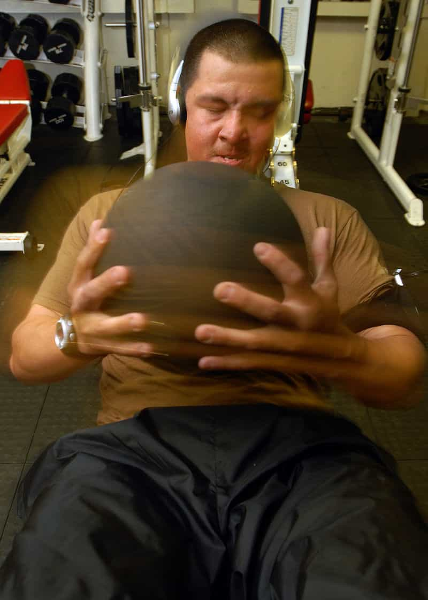
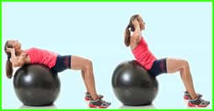
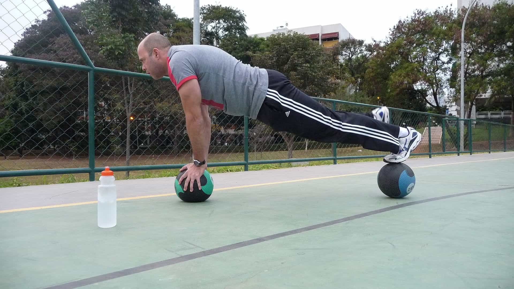
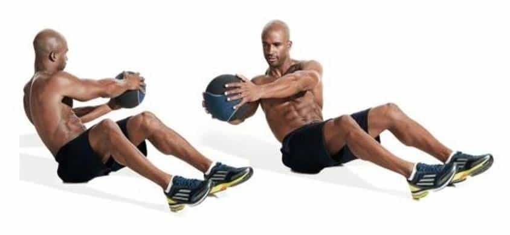
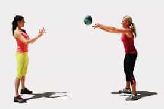
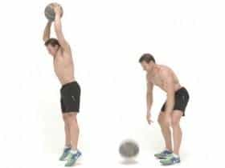

“Medicine balls?! Haw Haw!” you’re probably cackling to yourself. “Why not do an article on Indian Clubs or those electro-shock penis stimulators from the Victorian era, Grandpa?!”
First of all, Indian Clubs—or Persian clubs, whatever you want to call them—are a fantastic workout device by themselves, and will perhaps get an article in the future (the penis stimulators, not so much). But to get to the point: old fashioned though the use of medicine balls may be—-so old fashioned that Hippocrates himself advocated their use—medicine balls are rapidly becoming fashionable in fitness circles again. As well they should, because these pliant and uniquely shaped weights can provide a wide variety of fitness benefits.

Some History
Before we begin, let us make something quite clear: medicine balls are not exercise balls. The former has 3000 years of history and tradition behind it, and was used in countries around the world, while the latter was invented for rehab purposes but has since been co-opted by middle aged housewives for feeble, non-commitant exercises.

No, Google Image Search, this is not a medicine ball. Shut up.
No, the medicine ball, is smaller (about the size of a basketball), and weighs anywhere from 5-100 pounds. What sort of exercises can you do with the ball?
1. An unstable platform
The simplest use of the medicine ball is to use the ball as an unstable platform or handhold, making various exercises more difficult due to being off balance. If you’ll recall, the one-handed pushup uses a basketball in one of the later steps of the progression to make the flat arm work harder.
Similarly, you can use medicine balls to do planks, pistol squats, other types of push-up including the handstand pushup, or any other exercise where being off balance would make it more difficult.

Seen here: a medicine ball plank
2. Medicine Ball Twists
With a partner, stand back to back, take a medicine ball, and twist your torso to pass it to him, and he reciprocates. Be sure to rotate your torso and not your arms—I tell my clients to lock their arms in front of them and keep them centrally located in front of the chest during the duration of the exercise.
Do this for time, and be sure to switch rotation pattern—ie: if you start clockwise, switch to counter-clockwise at some point. This will hit the obliques and spinal rotators/extenders in a way that most people’s exercises don’t. If you don’t have a partner, just do trunk twist sit-ups to get a similar effect—an exercise that is occasionally referred to as the Russian Twist.

3. Medicine Ball Toss and Catch
One advantage that the medicine ball has over traditional weights is the inherent softness and pliantness of the medicine ball. In practical terms this means it can be thrown and dropped without cracking the floors and walls—or somebody’s head for that matter. It’s simple to do: just do chest passes like you were playing basketball, either off the wall or to a partner. Throw, catch, and repeat.
This is an explosive and dynamic exercise for the chest, arms, and shoulders, and it is a great abdominal exercise as well. Catching the ball forces the abs to forcefully contract to “brace” for impact in a similar manner to taking a punch to the stomach. Keeping that in mind, is it any wonder that so many boxers, mixed martial artists, and other fighters have done this for centuries to develop their defense capabilities?

You can also have somebody throw the medicine ball at your stomach if you have sadistic friends or just want to reenact the movie Kickboxer for the hell of it. Frankly, I’d just be happy you’re reenacting the training scene and not this scene…
4. Overhead Throws/Sumo Deadlift
Vaguely related to the previous entry, doing deadlifts with a heavy medicine ball, lifting the ball overhead, and slamming the ball down is a great total body workout—just use the tips on deadlifting I’ve already given you to prevent injury.

5. A weight
And of course the old reliable. Just pick it up and use it as an unconventionally shaped weight for whatever exercise you want.
So laugh at the archaicness of medicine balls if you must—-there’s a very good reason why they’ve been used for millennia, and are starting to come back now, because they are very effective devices.
Read More: Why You Should Skip Crunches And Do These Ab Exercises Instead